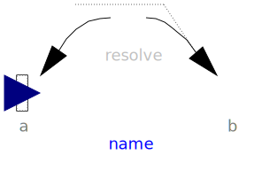
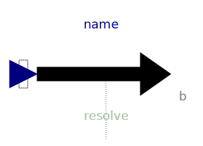

Internal package, should not be used by user
| Name | Description |
|---|---|
| Force acting between two frames, defined by 3 input signals | |
|  BasicTorque | Torque acting between two frames, defined by 3 input signals |
|  BasicWorldForce | External force acting at frame_b, defined by 3 input signals |
|
|
External torque acting at frame_b, defined by 3 input signals |
|
|
Standard gravity fields (no/parallel/point field) |